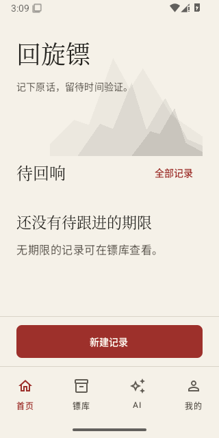
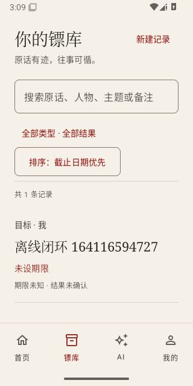
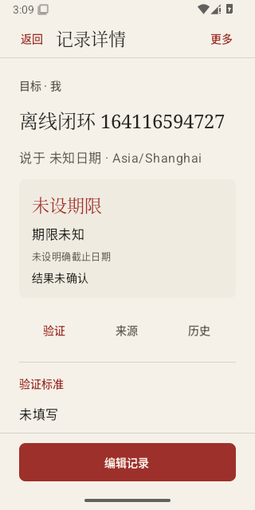
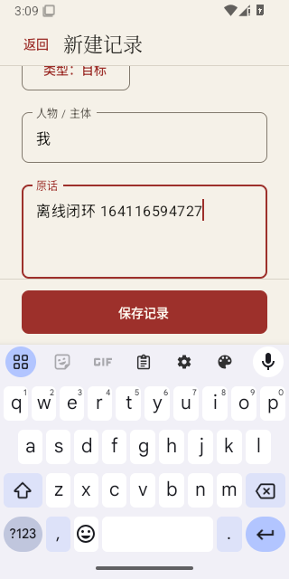
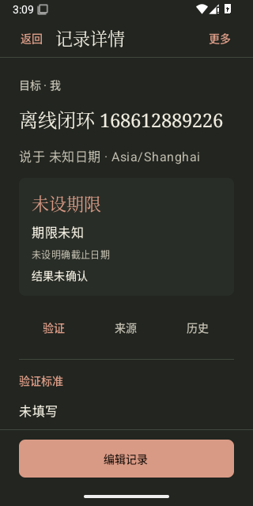
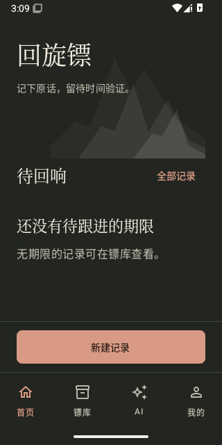
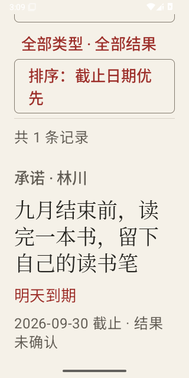
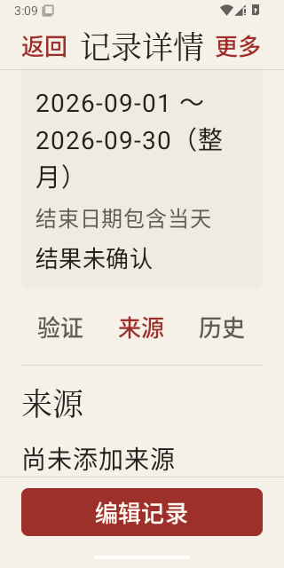
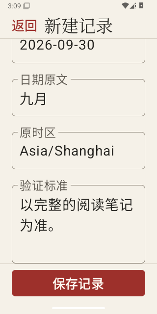

BOOMERANG / ANDROID UI · 02
宣纸朱砂，落于掌中。
水墨主题已落地：首页、镖库、编辑与详情。品牌旁的小印章已移除。这些画面来自 Android 模拟器的实际渲染，记录均为测试生成的合成数据。
查看交互设计稿
01 · 首页
真实应用 · 纸面导航与固定新建入口

02 · 镖库
真实应用 · 搜索、筛选与记录

03 · 详情
真实应用 · 原话、期限与编辑

04 · 编辑
真实应用 · 长表单与固定保存

05 · 夜墨
真实应用 · 系统夜间模式

06 · 夜墨首页
真实应用 · 系统夜间模式
查看大字号组件检查
200% 字号下的滚动与内容可达性。此组是独立组件容器，系统栏以以上真实应用画面为准。

07 · 大字号镖库
200% 字号 · 记录内容 · 滚动后

08 · 大字号详情
200% 字号 · 来源内容与编辑

09 · 大字号编辑
200% 字号 · 验证标准与保存